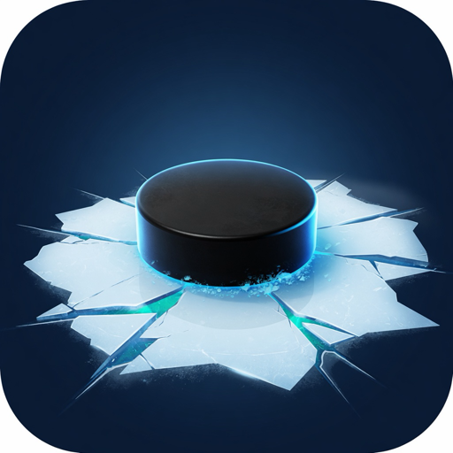

Contact
Email: jnovikow@gmail.com
HockeyDev is general training education. It is not a medical device and it does not diagnose an injury. Use a weight you can control. Land jumps quietly. Stop if a movement pinches, is sharp, or makes a symptom worse. Growth-spurt knee or heel pain needs a clinician, not a harder workout. Young athletes should train where a qualified coach can see them.
Where is my check-in?
On this iPhone. Deleting the app removes it. A device backup can restore it if HockeyDev was included.
Is there an account?
There is no sign-in, no ads, and the app does not use the network.
Do the vision drills make players better on the ice?
They measure reaction and peripheral awareness. Evidence that they transfer to games is limited, so the app treats them as extras next to small-area games.
Something broken?
Email jnovikow@gmail.com with your iPhone model, iOS version, and what you were doing.